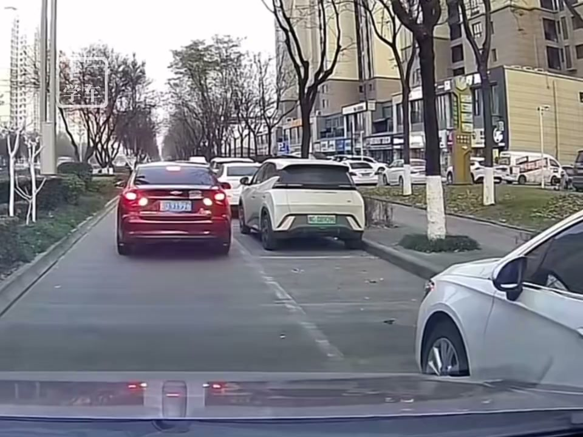
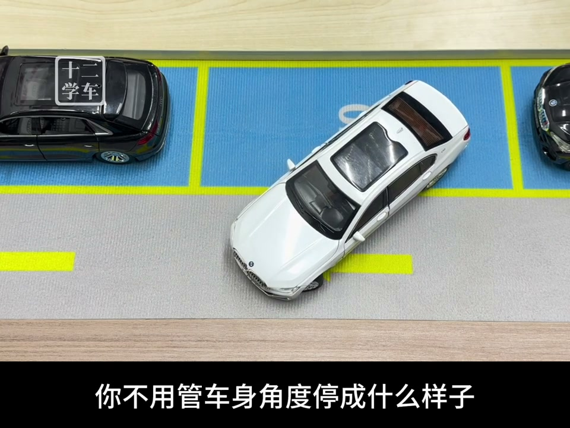
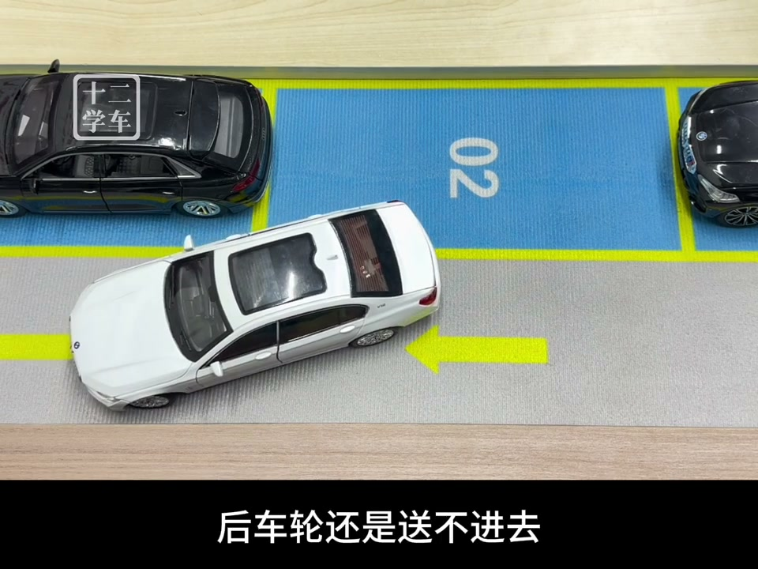

内容要点
这段视频围绕「XiaoHongShu video #6850318c0000000021018f6f」展开，按时间介绍其中的关键环节。来,看案例,这位司机进行车房停车。
进阶设置与优化
来,看案例,这位司机进行车房停车。由于路不是很宽,调整了很多次都没有成功路库。整体来说还是车身偏外,最终还是放下了车位。所以我们讲,问题出现在哪里。它前面的操作没有任何问题,先贴近旁边车。给左侧车头留出外摆的空间。但倒置一半,它把前轮回正了。所以就导致后车轮没有送进去。你看我们一直讲,车身偏外的主要原因。就是因为后车轮没有送到位

[00:00] 进阶设置与优化相关画面。
Footage on advanced settings and optimization.
核心内容
车头外摆的空间也会越来越大。这时候不应该回正方向。而是加大角度,继续倒车。目的就一个,把后车轮先送进去。你不用管车身角度停成什么样子。只要后车轮能到位,并且车头右前方有空间。就等于已经进空了。之后只需要右前方走一点,反方向倒一点。重复此操作,也就可以了。车身角度是最好调整的

[00:28] 核心内容相关画面。
Core-content footage.
核心操作步骤
右前方走一点,反方向倒一点。但切记,右前方走的时候不要走太多。不然后车轮会被拉出去,车身还是会偏外。好,下一期咱们缩短车位。就是在你倒车时已经打死方向了。但因为车位很短,后车轮还是送不进去。或者你的车感不是很好。车头外摆时总是害怕刮到前车头。这种车位有没有办法可以进。好,我们下期见

[00:53] 核心操作步骤相关画面。
Footage of the core operation steps.
总结
右前方走一点,反方向倒一点。